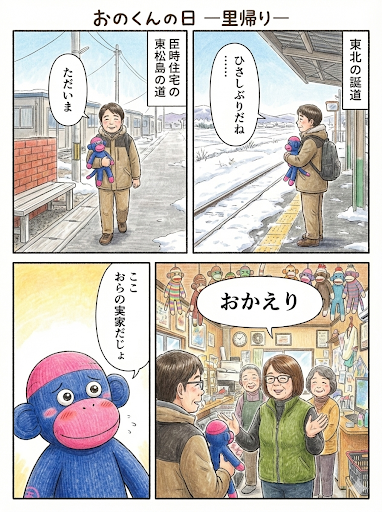

おのくんの日
― 里帰り ―

読み方：右上 → 左上 → 右下 → 左下
Onokun / 4-Koma Manga Room
おのくんの物語を、4コママンガでお届けする部屋です。 「おのくんの日」シリーズを、1話ずつゆっくり公開していきます。

読み方：右上 → 左上 → 右下 → 左下
「おのくんの日」シリーズは、これから少しずつ増えていきます。おたのしみに。
Next
おのくんのことがちょっと気になったら、持ち寄り文化を広げるプロジェクトものぞいてみてください。